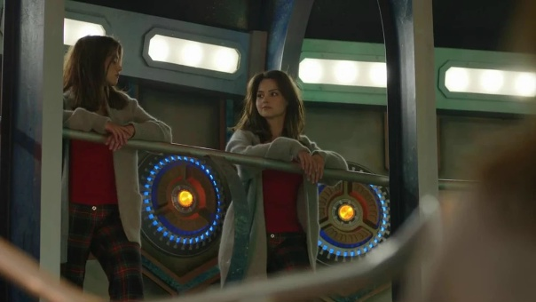

Эра Одиннадцатого Доктора (7 сезон)
<<< НАЗАД ||| Клара и ТАРДИС ||| ДАЛЬШЕ >>>
или с субтитрами

Clara and the TARDIS
мини-эпизод
24 сентября 2013
Формат: 2,5-минутный эпизод
| Варианты озвучек: | * VO BaibaKo |
|---|---|
| Скачивание и просмотр: |
Клара встревает в спор с машиной времени после того, как та устроила ей розыгрыш в душе, а затем сделала так, что спальня Клары исчезла. Клара думает, что это все ТАРДИС устраивает из-за того, что Доктор «привел девушку домой», но тут ТАРДИС показывает ей, что Мисс Освальд далеко не первая, кого он «привел домой». ТАРДИС проводит еще одну «шутку» и Клара видит себя вторую, третью, четвертую...

